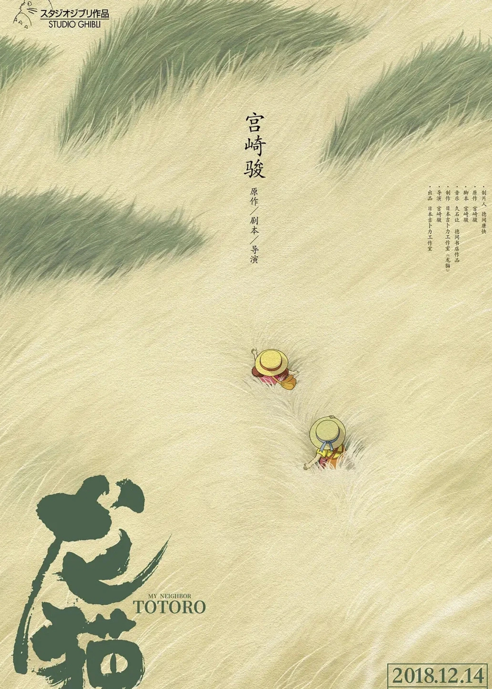
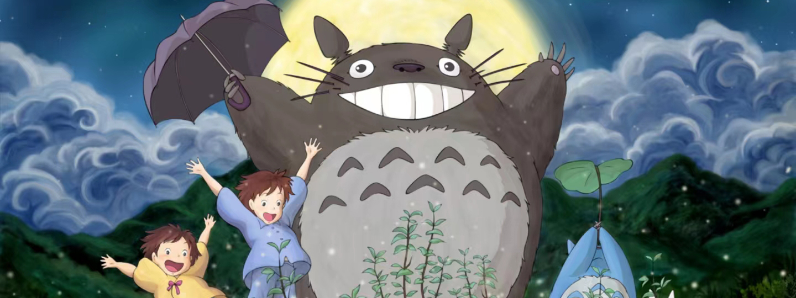
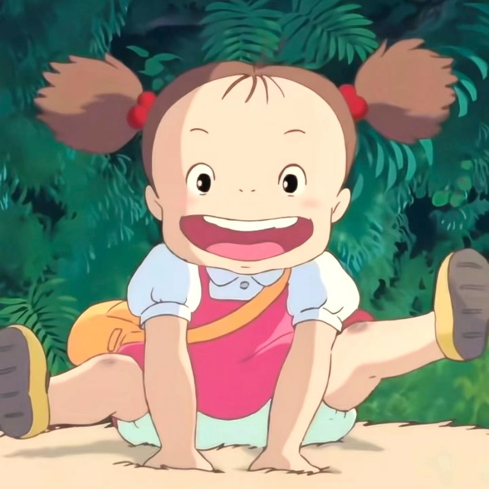
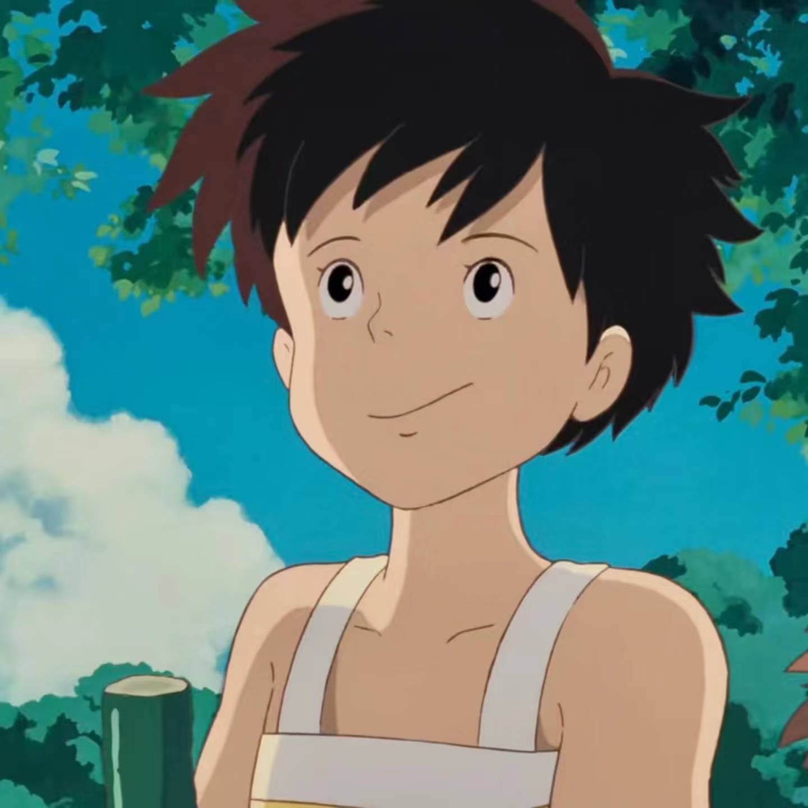
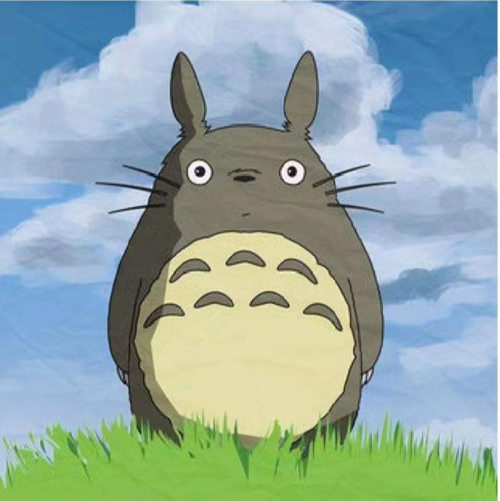
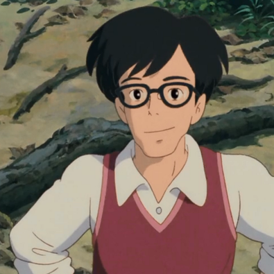
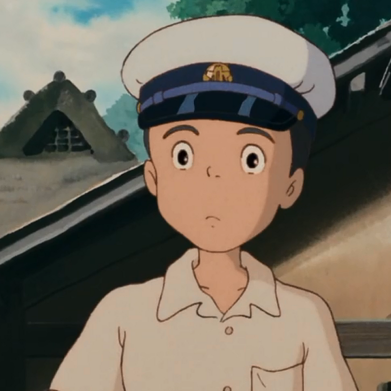

推荐作品 - 《龙猫》


《龙猫》是由宫崎骏执导，日高法子、坂本千夏、糸井重里配音的动画电影，于1988年4月16日在日本上映。高清重制版于2018年12月14日在中国公映。该片讲述了草壁达郎的妻子草壁靖子生病住院后，他带着草壁皋月与四岁的妹妹草壁梅回到乡间居住的故事。
小月的妈妈生病住院了，为了方便养病，草壁达郎决定带着两个女儿草壁皋月和草壁梅搬到草壁靖子所在疗养院附近的乡下，父女三人入住了一间年久失修的老房子。小姐妹俩很快发现看似平凡无奇的乡下有很多神奇的事物，无人居住的房屋里能聚能散还能飞的“煤灰”、森林里的小精灵、森林的主人龙猫和笑口常开的猫巴士。一天，妹妹草壁梅和姐姐草壁皋月吵了架之后，便独自出走去找自己生病住院的妈妈，途中却迷了路。姐姐在四处寻找无果的情况下，只好求助于龙猫。善良而温和的龙猫唤来猫巴士，载着姐姐找到了迷路的妹妹，乘着龙猫电车，妹妹把亲手摘的玉米送给了妈妈，希望她早日康复。龙猫既能乘着陀螺腾空飞翔，又能让刚种下的种子一瞬 间长成参天大树，还能呼唤来风驰电掣的猫巴士。繁星 闪烁的夜晚，龙猫会坐在森林顶端吹奏小鹅笛。 龙猫的神奇力量令小月和小梅大开眼界。然而，可不是 所有人都能看见龙猫的，只有内心纯净的孩子，才能遇见龙猫。
该片优美的画面充满着农村田园的清新气息，片中却不乏各种惊心动魄的场面。虽然让观众有点紧张但这也是该片牵动人心的魅力所在。无论是大人还是小孩都能在影片中产生心灵共鸣。可谓是老幼皆宜。在宫崎骏神来之笔的点缀下，龙猫可以当软床睡，当魔术师膜拜的软萌“宠物”，还会陪五月、梅采摘山果子。每一个桥段都透着大自然对人类的呵护之情，捍卫了观众们的童真年代。

草壁梅

草壁月

龙猫

草壁达郎

大垣勘太